-
Legenda
Percorso scolastico Formazione Esperienza lavorativa -
Insegnante - MIM
Da settembre 2017 a oggi:
Maestro. -
Storytelling con i Libri Game
Maggio 2023:
Completamento di un corso formativo della durata di 10 ore organizzato dal Servizio Marconi TSI Equipe Formativa Territoriale dell'Ufficio Scolastico Regionale per l'Emilia-Romagna sullo storytelling con i libri game.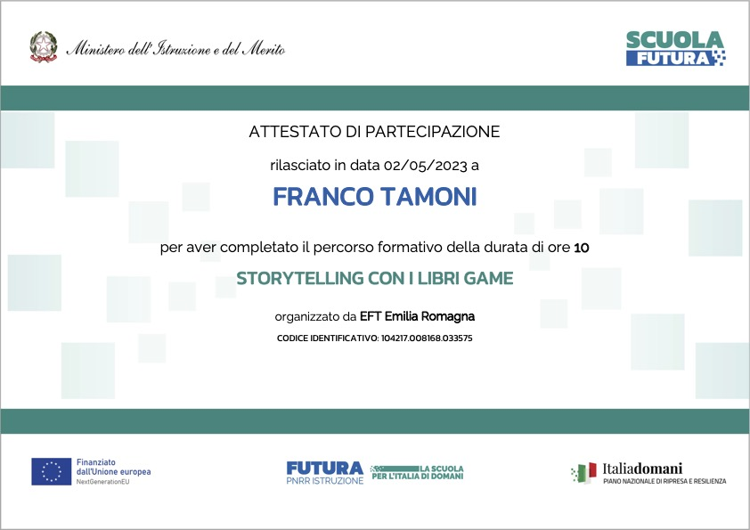
-
Coding con Python
Gennaio 2023:
Completamento di un corso della durata di 36 ore organizzato dal Polo STEAM - Este (PD) sul coding con linguaggio di programmazione testuale: Python.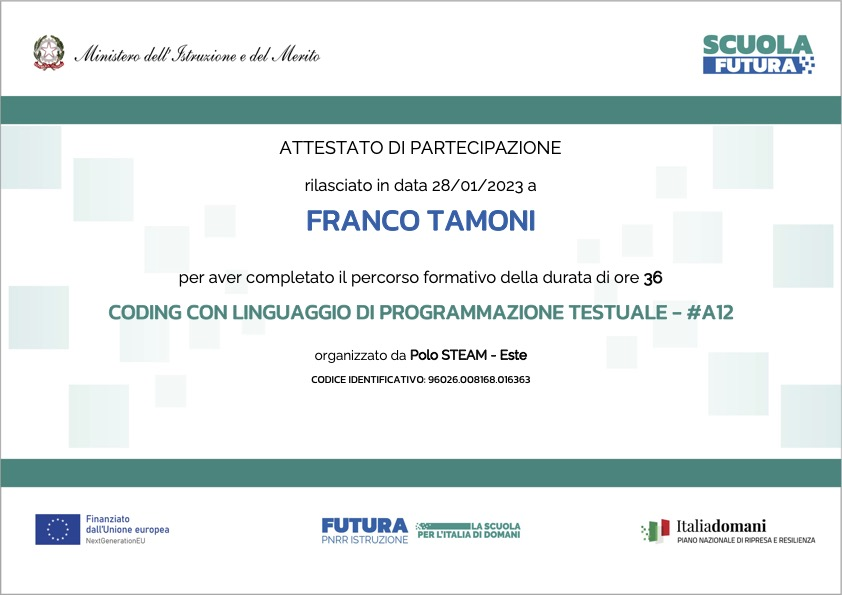
-
Elementi di scrittura con LaTeX
Ottobre 2022:
Completamento del corso di formazione "Elementi di scrittura scientifica con LaTeX" della durata complessiva di 15 ore, organizzato da Bembus, promosso da Humanities for Change e Il Liutaio nel Bazaar e finanziata con i fondi per le attività studentesche dell'Università Ca' Foscari di Venezia.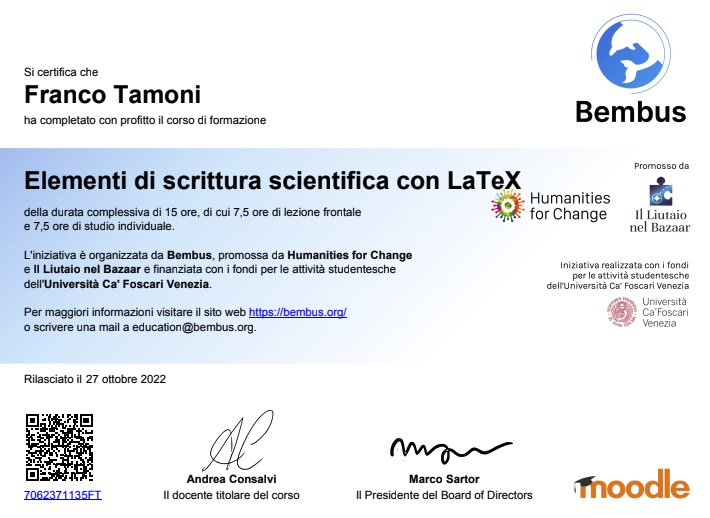
-
Book Creator Certified Author
Luglio 2022:
Completamento di un corso di authoring di libri digitali con Book Creator e conferimento del badge "Book Creator Certified Author".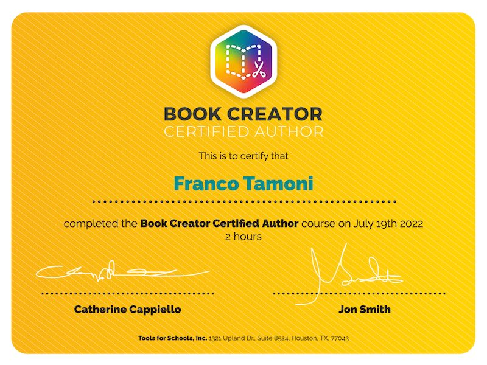
-
Tinkering
Giugno 2022:
Partecipazione al webinar "Tinkering - ne parliamo con Luigi Anzivino", in collaborazione con il Servizio Marconi TSI Equipe Formativa Territoriale dell'Ufficio Scolastico Regionale per l'Emilia-Romagna nel quadro dell'attività di scuola polo del'IIS Scarabelli-Ghini in tema di innovazione didattica a livello regionale per gli animatori digitali e tutti i docenti interessati.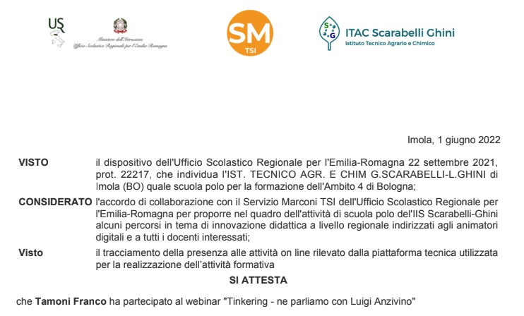
-
Formazione per docenti in anno di prova
Maggio 2022:
Partecipazione alla formazione organizzata per i docenti in Anno di Formazione e Prova dall'UAT di Ferrara e dalle scuole polo degli Ambiti 5 e 6.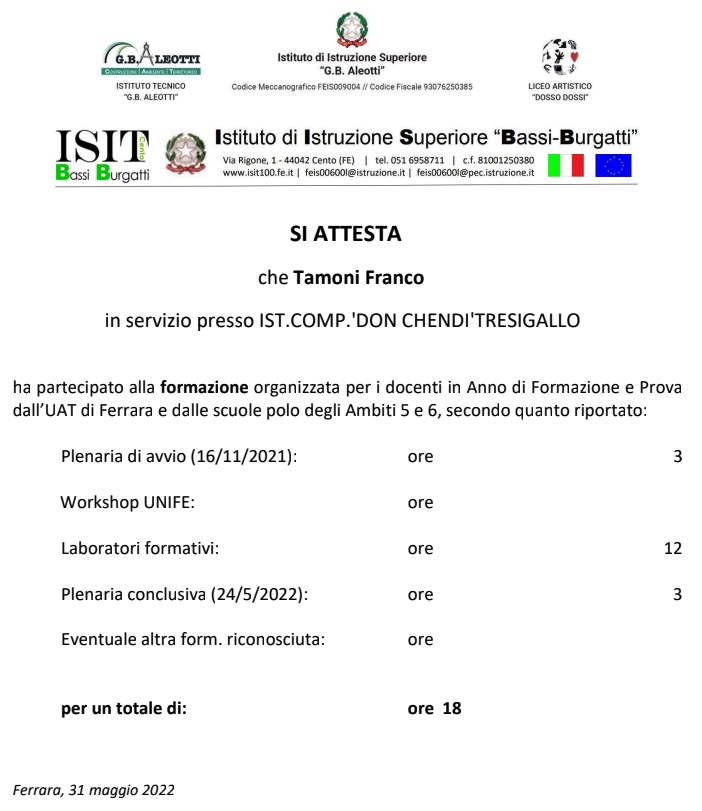
-
Apprendimento cooperativo
Aprile 2022:
Partecipazione al corso di formazione "Apprendimento cooperativo: perché e come realizzarlo" organizzato dal Servizio Marconi TSI Equipe Formativa Territoriale dell'Ufficio Scolastico Regionale per l'Emilia-Romagna.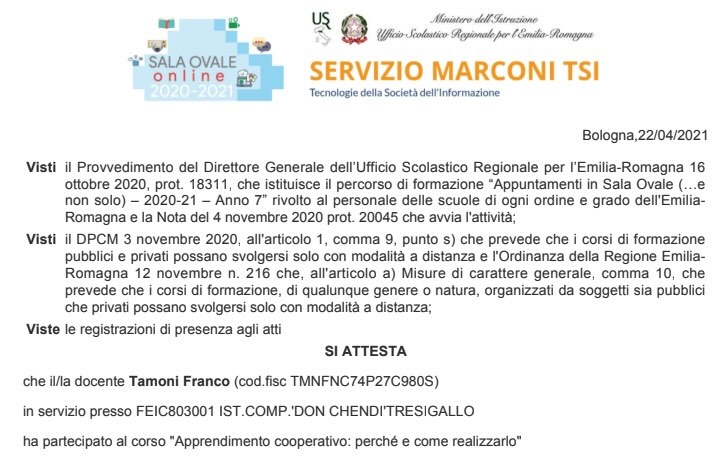
-
Tools per la Primaria
Marzo 2022:
Partecipazione al corso "Tools semplicissimi per la Primaria", in collaborazione con il Servizio Marconi TSI Equipe Formativa Territoriale dell'Ufficio Scolastico Regionale per l'Emilia-Romagna.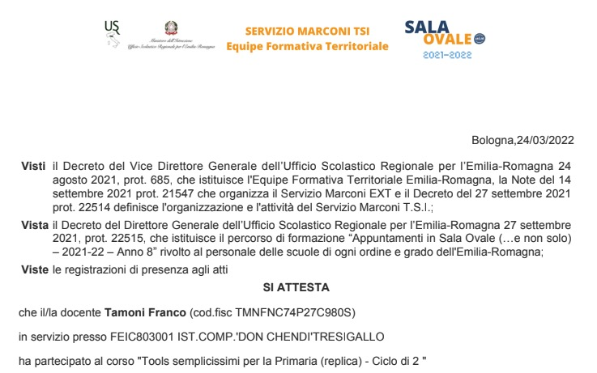
-
Dal disegno alla stampa 3D
Marzo 2022:
Partecipazione al corso "Dal disegno alla stampa 3D", in collaborazione con il Servizio Marconi TSI Equipe Formativa Territoriale dell'Ufficio Scolastico Regionale per l'Emilia-Romagna.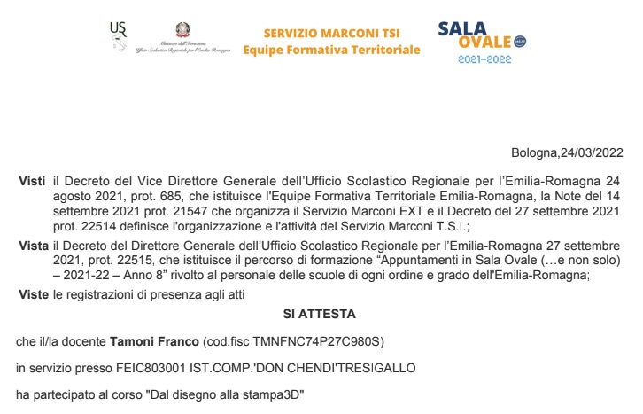
-
TFA Sostegno - UNIFE
15 luglio 2021:
Completamento del persorso TFA Sostegno presso UNIFE con conseguimento del Diploma di Specializzazione per le Attività di Sostegno Didattico agli Alunni con Disabilità. -
DDI... per una scuola inclusiva
Dicembre 2020:
Partecipazione al corso "DDI... sfida pedagogica per una scuola inclusiva", promosso dal C.T.S. di Ferrara in collaborazione con l'Ufficio Integrazione del Comune di Ferrara e Cooperativa ATI Sostegno.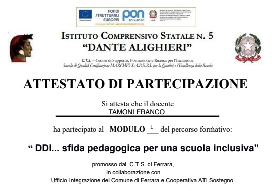
-
Noi per loro
Aprile 2018:
Partecipazione al corso di 21 ore "Noi per loro, formazione sui Disturbi Specifici dell'Apprendimento", per insegnanti della Scuola Primaria, organizzato da SOS Dislessia Onlus, ente accreditato dall'Ufficio Scolastico Regionale per l'Emilia-Romagna, con il patrocinio della Provincia di Ferrara.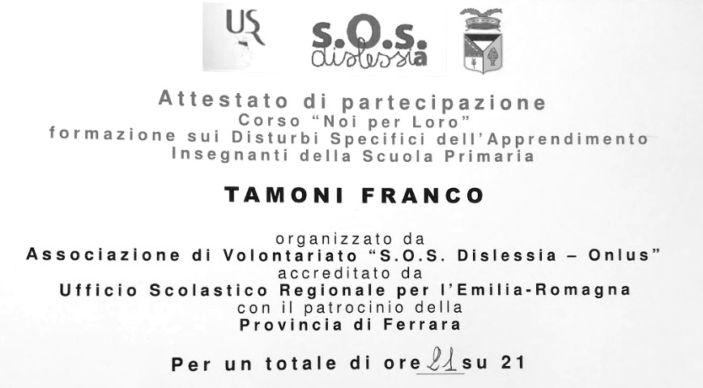
-
Attestazione di lingua inglese
Giugno 2017:
Attestazione di livello di Lingua Inglese come ADVANCED, equivalente al livello B2+ del Common European Framework of Reference, presso Wall Street English di Ferrara.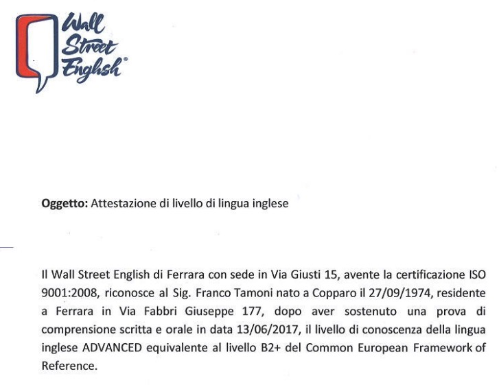
-
ir - Digital Assets Management
Febbraio 2015 - Settembre 2017:
DAM - Digital Assets Management: ingestion, annotation, cataloguing, storage, retrieval and distribution of digital assets. Utilizzo di Scalar i500 LTO storage system, Linux (Debian) Server. Attività di IT and tech support presso il laboratorio L'Immagine Ritrovata - Film Restoration and Conservation - Cineteca di Bologna.Cosa si fa in un laboratorio di restauro cinematografico?
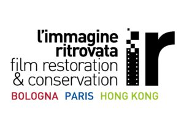
-
ir - DCI Mastering & QC
Gennaio 2013 - Gennaio 2015:
DCI Mastering e Controllo Qualità su vari supporti: DCP, HDCAM, Digital Betacam, File based video encoding. Utilizzo di Rohde & Schwarz DVS Clipster workstations, Sony DVW-M2000P, Sony SRW5500 presso il laboratorio L'Immagine Ritrovata - Film Restoration and Conservation - Cineteca di Bologna. -
ir - Digital Restorer
Marzo 2012 - Dicembre 2013:
frame based e clip based digital restoration su software Blackmagic DaVinci Revival e Image Systems Phoenix presso il laboratorio L'Immagine Ritrovata - Film Restoration and Conservation - Cineteca di Bologna. -
ir - Digital Film Restoration
2012:
Formazione professionale in Digital Film Restoration su Blackmagic DaVinci Revival e Image Systems Phoenix presso il laboratorio L'Immagine Ritrovata - Film Restoration and Conservation - Cineteca di Bologna. -
Post-production Specialist & ICT
Marzo 2006 - Maggio 2009:
Post-production Specialist & ICT presso USA Home Entertainment - Polesella - Rovigo. Attività di video editing, video post, tutoring, DVD authoring, motion graphics. -
MISP - UNIBO/IUPUI
2005 - 2006: Master in International Studies in Philanthropy and Social Enterpreneurship (MISP/IUPUI) presso l'Università di Bologna e la IUPUI University - Indianapolis, Indiana (tot. 1800 ore). Resp. Bologna: Prof. Giuliana Gemelli; Resp. IUPUI: Prof. Dwight Burlingame. Temi: Corporate Social Responsibility, ONG, project development, third-sector. Programma di scambio di 4 mesi presso la IUPUI University, Indianapolis, Indiana (USA).
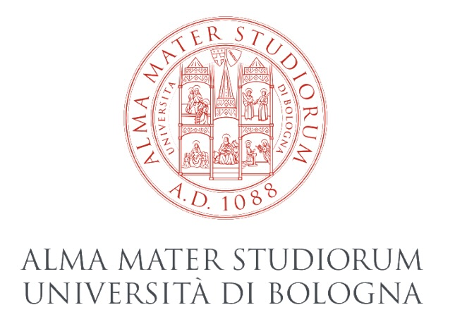
-
Customer Service Advisor - Apple
Febbraio 2003:
un anno come Customer Service Advisor presso Apple Computer Inc. sede di Cork - Ireland. -
Laurea
10 dicembre 2002:
Laurea in Filosofia, indirizzo Scienze Umane e Sociali, con votazione 110 e lode. Tesi in Etnologia. Università di Siena.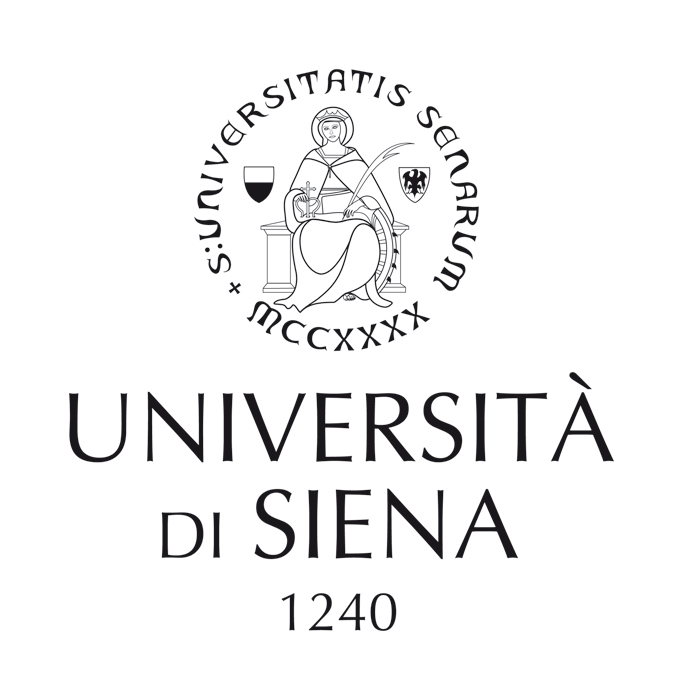
-
Insegnante ICT
Ottobre 2000 - Maggio 2002:
Insegnante presso le Scuole Web & Multimedia, CFP Don Calabria - Ferrara. Introduzione a macOS; introduzione ad Adobe Photoshop e a vari programmi di authoring multimediale.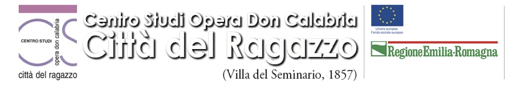
-
Tecnico dell'Editoria Multimediale
1999 - 2000:
Diploma di Tecnico dell'Editoria Multimediale, conseguito presso le Scuole Web & Multimedia, CFP Don Calabria - Ferrara. Corso FSE - livello IV della durata di 700 ore + 200 ore di stage in azienda (Melazeta Communication House di Modena). -
Servizio civile - ANFFAS
Febbraio 1995:
Servizio civile di un anno presso ANFFAS di Bologna come operatore SAP (servizio aiuto alla persona).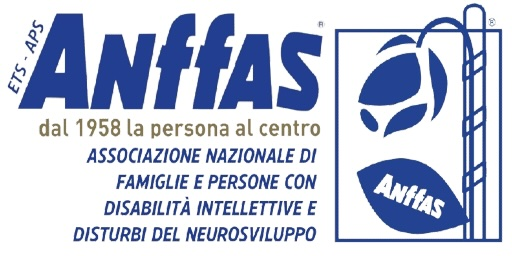
-
Operatore Stacker - Eridania
Dodici campagne saccarifere estive in qualità di Operatore Stacker presso lo stabilimento Eridania Zuccheri (poi SFIR) di San Pietro in Casale (BO).